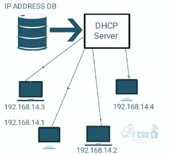

Rok szkolny 2024/2025
Co to jest DHCP?
DHCP, czyli Dynamic Host Configuration Protocol, to protokół sieciowy, który automatycznie przydziela adresy IP oraz inne informacje konfiguracyjne urządzeniom w sieci komputerowej. Dzięki DHCP, administratorzy sieci mogą zarządzać adresami IP w sposób bardziej efektywny, eliminując potrzebę ręcznego konfigurowania każdego urządzenia.
Jak działa DHCP?
- Rozpoczęcie komunikacji: Gdy urządzenie (klient DHCP) łączy się z siecią, wysyła komunikat DHCP Discover w celu
znalezienia serwera DHCP.
- Odpowiedź serwera: Serwer DHCP, który otrzymał ten komunikat, odpowiada komunikatem DHCP Offer, zawierającym
dostępny adres IP oraz inne informacje konfiguracyjne, takie jak maska podsieci, brama domyślna i serwery DNS.
- Akceptacja oferty: Klient DHCP odpowiada komunikatem DHCP Request, informując serwer, że akceptuje ofertę.
- Potwierdzenie: Serwer DHCP wysyła komunikat DHCP Acknowledgment, potwierdzając przydzielenie adresu IP oraz innych
ustawień.
- Czas dzierżawy: Adres IP jest przydzielany na określony czas (czas dzierżawy). Po upływie tego czasu klient musi
odnowić dzierżawę, aby nadal korzystać z tego samego adresu IP.

Dzięki DHCP, zarządzanie adresami IP w sieci staje się znacznie prostsze, a urządzenia mogą być szybko i łatwo konfigurowane do pracy w
sieci.
@2025 Maciej Celuch